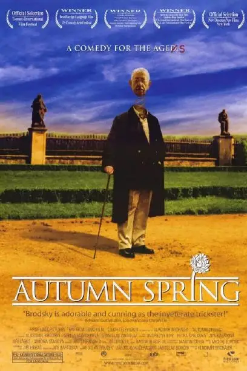
暖黄的色调、飘在空中的脑袋。
光看海报，就知道这部电影一定很诙谐、很脑洞。
果然，刷完后真的被惊艳到了，不仅好笑，简直要让人泪奔。
在好莱坞大片大行其道的今天，能有这种独特观感的也只可能是小国电影。
这部捷克斯洛伐克的电影叫做《秋天里的春光》，是一部关于老人和死亡的电影。
电影收获多项国际大奖，豆瓣评分8.8，要甩《桃姐》几条街。
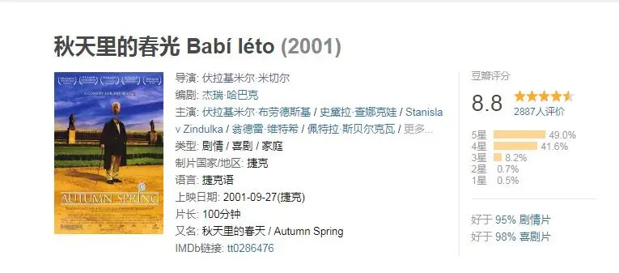
电影刚开始，80岁的老人范达准备购置一套豪宅。
面对这么大的买卖，销售丝毫不敢懈怠，又是雇豪车接送，又是开名酒相迎。
老人却很挑剔，四处观望、不置可否。
而他的随从艾德也是一位80来岁的老人，一路拍照以供主人决策。
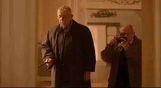
销售诚惶诚恐一路为范达讲解豪宅的房型、配套，生怕因为不谨慎错失了这单大买卖。
可是，老人看了一通后还是扬长而去。
没有想到，范达和艾德根本就不是什么大富大贵之人，只是两个剧团退休的普通老人而已。
他们装作富人把别人耍的团团转，还互相称赞对方的演技好，没有丝毫破绽。
范达甚至入戏太深，不禁向艾德感慨：连我自己都信以为真来，人老了还是要有钱才行。
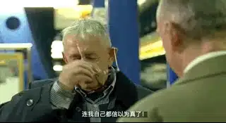
第一个场景中，导演就为我们刻画了两个胆子很肥、很讨人厌的老人。
接着镜头切到一阵敲门声，老婆婆艾米莉来开门。
打开门却发现没有人，忽然一束花闯入眼前，艾米莉被吓的大叫了一声。
后面导演给出了一个全景镜头，原来是范达蹲在门口给老伴的特别“惊喜”。
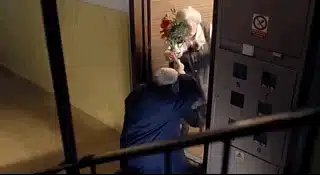
这哪是一个八十岁死气沉沉的老人，简直就是个老玩童。
受到惊吓的艾米莉对范达一阵痛骂，并把花摔在桌上。
原来，范达在外面和好友玩cosplay过于尽兴，都错过了一家人为他精心准备的80岁生日party。
所以范达才买了花向艾米莉赔罪。
艾米莉显然不接受他的道歉，指责他不应该错过这场生日。
可是范达却对于过不过生日很无所谓，艾米莉无奈地告诉他：万一这是你的最后一次生日呢。
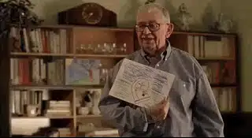
不管范达怎么想，反正家人是按最后一次生日为他准备的。
有人甚至送了范达一双准备下葬用的黑皮鞋。
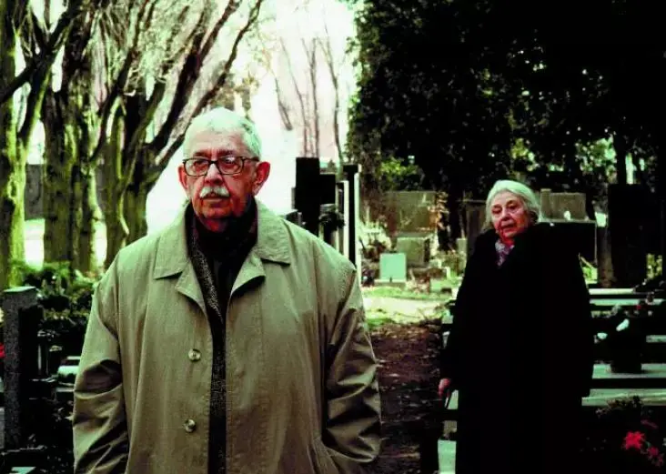
开头这两个场景拍的非常好，导演不仅刻画了三个非常有趣的老人形象、表现出范达和艾米莉的戏剧冲突，同时也交代了这部电影的主题：死亡之下的老人。
这是摆在所有人面前难以回避的问题。
对于76岁的艾米莉来说，她一直在积极准备迎接死亡。
为此，她精打细算准备了很多个铁罐，有专门存棺材本的，有专门请丧葬队的。
艾米莉告诉范达，“等筹够了钱我们才能死”。
经济不宽裕，他们还买了个二手墓地，将来要和另一个家庭葬在一起。
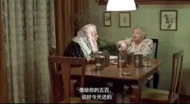
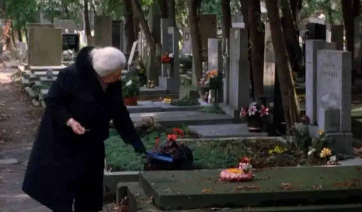
不仅如此，艾米莉还准备了清单，里面写明了自己葬礼上用什么花、要请哪些人、放什么歌。
艾米莉在墓地看到写的好的讣告，还会用笔记下来，说不定自己将来的讣告可以借鉴。
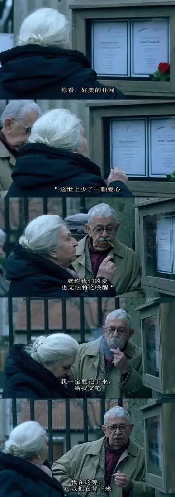
但是对与范达而言，他对死亡不屑一顾。
虽然已经八十岁了，他却越老越疯狂，在垂暮之年用自己的演技体验了各种从未拥有过的生活。
以前是个穷人，那现在就扮个富人去豪宅体验一把。
为了得到年轻女孩的香吻，他和艾德还扮作检票员。
范达谎话连篇却无恶意，虽然还欠着别人的钱，却还会拿自己的钱帮助别人。
艾德则是一只悲伤孤独的“老狗”。
要不是因为范达，艾德早已自杀。
他悲观绝望，他告诉范达：人应该在年轻的时候死掉。
而范达则很幽默地告诉他：良机错过了，就应该努力撑下去。
艾德因为高血压、白内障而情绪低落，范达则安慰他自己的关节炎、胆囊炎更要命，并诙谐地告诉他：我们都不用怕，反正比艾滋病好。
范达陪伴了他，用各种怪点子带给艾德快乐，范达给了艾德活下去的勇气和希望。
而艾德也最懂范达。
三种态度、三个性格迥异的老人碰在一起注定会发生很多故事。
导演设置了两条线来推进戏剧冲突。
一条是范达和艾德到处闯祸，给艾米莉惹来不少麻烦，甚至花光了艾米莉辛苦攒下的棺材本。
另一条线索就是范达不省心的儿子，儿子婚姻总是失败，娶一个媳妇生个孩子过不了多久就离婚了，然后再娶一个。
就连范达都记不清哪个孙子是哪个媳妇生的孩子。
更让范达失望的是，儿子盯上了他们的房子，想要把两个老人送到养老院，然后将他们的房子据为己有。
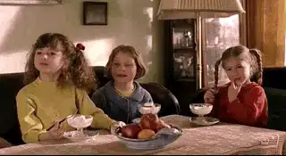
范达都懒得理睬不成器的儿子，而艾米莉则向着儿子，竭力说服范达一起去养老院。
家庭内的矛盾也在激化着范达和艾米莉的冲突。
最后，范达为了惩罚艾米莉，让艾德骗艾米莉自己死在了艾德的家中。
当艾米莉伤心地带着黑皮鞋和灵车来到艾德家家中，却发现被骗的时候。
艾米莉再也无法原谅范达，她决心要和范达离婚。
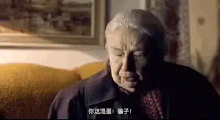
在法庭上，戏剧张力达到了高潮。
范达知道自己这次的玩笑开大了，他真诚地向艾米莉道了歉。
当法官问艾米莉是否坚持要和自己44年的丈夫离婚时，艾米莉看着一旁的范大，说出了自己的心声：
我承认我意见和他对立，那时我儿子要搬进我们的公寓，安排我们去住养老院，他不肯，也因为我帮儿子，所以他这么残忍地惩罚我。
而我一向都原谅他疯狂的想法，因为我羡幕他能那样和我不同，我是个一版一眼的人，而他有大梦想，他还在学法文，研究地图，想乘热汽球环游世界，他拒绝承认人生最终的路，其实现在都还不到那时候 。
我难以容忍他越老越疯狂，他不参加葬礼，拿死亡开玩笑，把讣闻拿来折飞机， 我还不知道他要土葬还是火葬。
他从不知道面包的价钱，却会盯着美金的汇率，美金贬值时，他买了八千送我，他乱花钱，却省在偷邻居报纸，他虽会及时归还，可是我老怕他被当场逮到。
我们坐火车给他爸上坟时，他不买票，被列车长逮到，范达神气地付了罚金还给小费，列车长都哭了，我劝他的时候他都说我说得对，可是依然我行我素。
电影中，当这些话一句一句从这个老人口中吐出的时候，真的非常感人，那种两个人几十年相濡以沫的深情、那种藏在柴米油盐下的受伤、那种两人互相磨合中的爱恨非常真实。
最终，艾米莉原谅了范达，而觉得深深亏欠的范达也决心要听老伴的话，不再做一个老玩童。
他留在家里按部就班，虽然不开心，但是为了艾米莉，范达似乎已经下定决心忍受这样的生活。
甚至，范达答应和老伴一起去养老院。
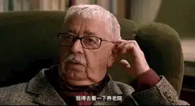
没有范达的陪伴，艾德很快病倒在医院，并将自己的老狗托付给了这位唯一的好友。
艾米莉为范达的改变而感动，但看着闷闷不乐的范达心里也非常不是滋味。
一天，当艾达从小区回来，看到范达像楼下的老头一样面无表情呆坐在窗前的时候，她再也受不了了。
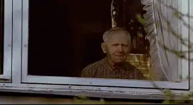
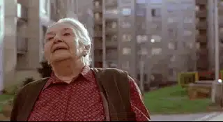
△此处的演技要给满分
艾米莉心疼地告诉范达：
你整天打鼾，要不就呆坐在窗口，像楼下那个可怜人一样，不说话，不抽烟，不喝酒，不吵架，我再也受不了了！
你到底怎么了？我嫁的是满脑子怪注意，很开心的人，让我整天能笑能吵的，现在你却坐在那里像个活死人..
艾米莉不知所措，她向躺在病床上的艾德求助，艾德给她出了一个绝妙的点子.....
这部电影幽默、伤感、感人至深。
在可怕的垂暮之年，在贫穷、家庭矛盾和孤独中，艾德很幸运，因为他有范达。
范达更幸运，他不仅有知己艾德，还有不离不弃的艾米莉；艾米莉也很幸运，她有个惹她烦、逗她笑的老玩童丈夫。
三个老人彼此依偎，追逐着秋天里最后的春光。
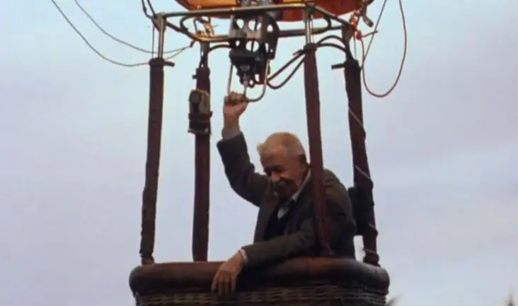
被老人之间的友情、爱情感动的同时，这部电影也会带给我们一个最深的思考：我们到底该如何面对死亡！
电影中给出的答案是不必妥协、不必悲观，活到老学到老玩到老，身体不亡，梦想也不会死去。
可惜，这种乐观也只能是一种可望却不可及的美丽希望。
在电影之外，本片主演范达的扮演者在电影上映的第二年开枪自杀。
这位曾经走过二战、铁幕时期、充满梦想和成就的老戏骨还是没有真正的平安和喜乐。
死亡是所有人的毒钩。
而在历史中，唯一胜过死亡的只有十字架上的耶稣。
对于所有走在衰亡路上的人而言，要真正面对死亡，首先要面对的是历史中的耶稣，需要考证这究竟是神话还是史实。
因为这件事藏着人类历史中最伟大的奥秘！
这里没有挑逗你眼目情欲的小鲜肉
也没有挑动你肉体情欲的段子
更没有膨胀你今生骄傲的鸡血
我们只在乎那些最质朴真诚的作品
在那里我们才能恢复真正的想象力
我们也坚信这才是我们真正需要的

ID:Six_hundred_hits
长按二维码，一键关注
【六百击】
-END-
电影评论
尽情分享朋友圈

苹果打赏通道
小提示：文末广告是腾讯配送广告，内容与本号无关，但您的每次点击（无需反复点）都会给平台带来几毛收益，欢迎您点击支持六百击。